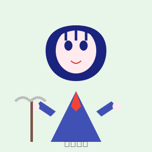
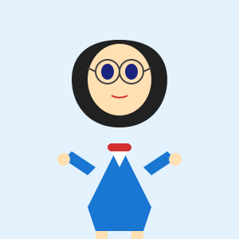
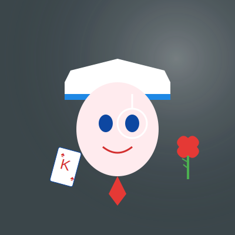
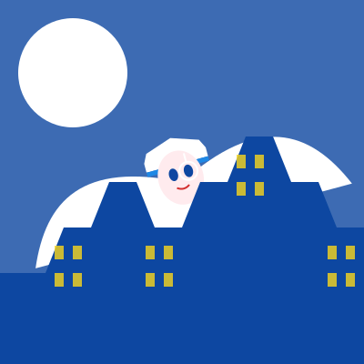
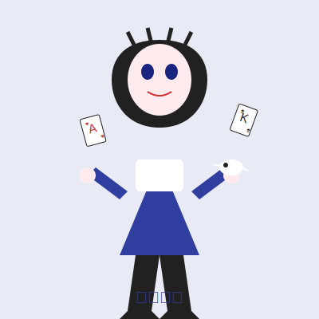

角色介绍
怪盗基德（日语：怪盗キッド，英语：Phantom Thief Kid），是日本漫画家青山刚昌创作的漫画《魔术快斗》及《名侦探柯南》中的虚构人物。
怪盗基德的真实身份是黑羽快斗，一位高中生魔术师。他继承了父亲黑羽盗一（前代怪盗基德）的衣钵，以怪盗基德的身份活跃于珠宝界。
基德的标志性装扮包括白色礼服、白色礼帽、单片眼镜和白色斗篷。他以预告信、华丽的魔术表演和绅士风度著称，被称为"月光下的魔术师"。
基本信息
- 本名：黑羽快斗
- 年龄：17岁
- 身高：174cm
- 体重：58kg
- 生日：6月21日
- 血型：B型
- 特长：魔术、易容、模仿声音、飞行
- 座右铭：一个魔术师永远不会透露自己的秘密
人物关系

中森青子
黑羽快斗的青梅竹马和暗恋对象。她是警视厅中森警部的女儿，讽刺的是，她的父亲正是负责追捕怪盗基德的警官。青子对基德深恶痛绝，却不知道自己暗恋的人就是基德本人。
寺井黄之助
黑羽盗一的助手，现在辅助快斗进行怪盗活动。他经营着一家台球馆，是快斗的得力助手和父亲的忠实朋友。
黑羽盗一
快斗的父亲，世界著名的魔术师，也是原版怪盗基德。他在一场魔术表演中意外身亡，但实际上是被神秘组织杀害的。

工藤新一/江户川柯南
名侦探，基德的宿敌之一。两人虽然立场对立，但在某些情况下也会合作。柯南是少数能够看穿基德魔术的人之一。
白马探
英日混血的高中生侦探，快斗的同班同学。他聪明冷静，一直怀疑快斗就是怪盗基德，但始终缺乏确凿证据。

小泉红子
美丽的女巫，快斗的同班同学。她知道快斗的秘密身份，对他有着特殊的感情，时而帮助时而阻碍他。
形象展示



经典台词
「レディース・アンド・ジェントルメン！」
— 怪盗基德的标志性开场白
「今宵も、月が綺麗ですね」
— "今晚的月色也很美丽呢"
「一个魔术师永远不会透露自己的秘密」
— 黑羽快斗
「我只是借来欣赏一下，之后会完璧归赵的」
— 怪盗基德谈论他偷窃的珠宝